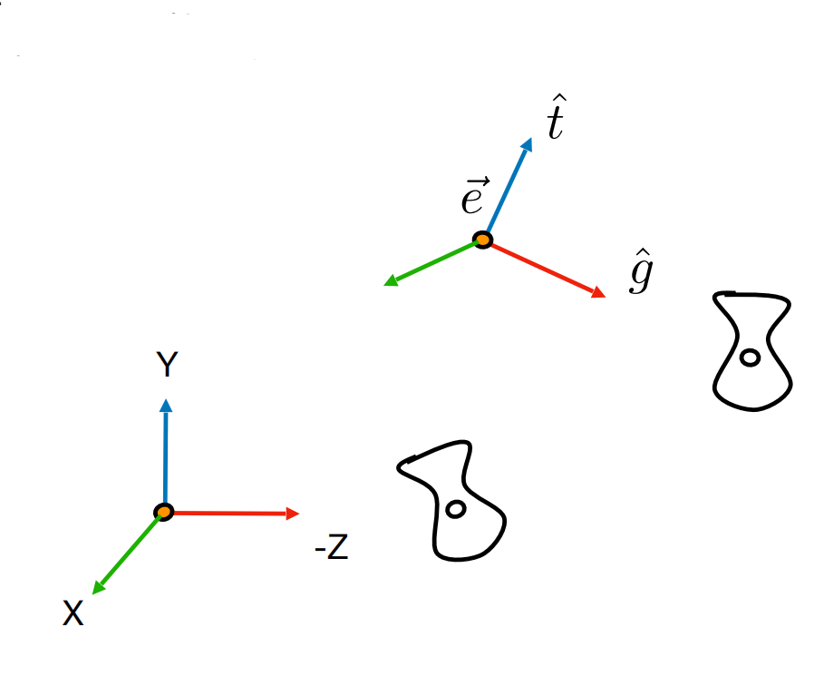

视图变换
视图变换又称作相机变换，它被用来形容怎么从哪里观测渲染的结果。
视图变换相当于在场景中摆放一个相机，并设置相机的注视点还有相机朝上的方向，然后通过这个相机观察场景。 一般来说，我们需要相机的位置、注视点、朝上方向三个分量这决定这个相机如何观测：
- 位置：决定了相机从什么地方观测场景。
- 注视点：决定了相机朝什么方向观测。
- 朝上方向：决定了成像的倾斜度。
朝上方向其实很容易理解，比方说拿手机拍摄，横着拍和竖着拍相差 90° 最后的结果就不一样。
这三个值可以使用三个点来表示，位置和注视点都是一个点很好理解，朝上方向则是用三维向量即可表示。总而言之，这三个值既可以是向量，也可以是点，只是计算方式不同。
变换思想
webgl 并不会自动切换到相机视角，webgl 永远只会朝着 Z 轴的负方向上看。所以只能把整个空间先位移到相机的位置，然后旋转到相机到注视方向上，并对齐朝上方向，这样才能以相机的视角来观察场景。
可想而知，位移要优先于旋转，如果先旋转当前场景，那么相机的位置也会乱跑，平移旋转这些操作都在顶点着色器里面，如果先旋转，着色器中就还要接收相机的位置并计算得到旋转后的位置，这样太麻烦。所以要先位移，把相机摆放到原点，然后再旋转。
拆解位移
要如何位移，我们可以通过相机的位置得到，使用相机位置的相反数对相关 XYZ 坐标进行相加即可，把位移矩阵记作 $M$。即：
拆解旋转
位移之后，相机来到了原点，那么相机的注视方向还有向上方向即为对空间的旋转。现在就需要把注视方向旋转到 Z 轴负方向，朝上方向旋转到 Y 轴正方向。
相机的注视方向与朝上方向叉乘可以得到一条法向量，三条向量两两垂直，然后归一化后记作相机的坐标系 C'。（如果朝上方向不和注视方向垂直，可以使用刚才得到的法向量再叉乘注视方向即可得到垂直注视方向的向上方向），三条向量可以表示为：
- 注视方向：$e = \begin{bmatrix} ex \\ ey \\ ez \end{bmatrix}$
- 朝上：$t = \begin{bmatrix} tx \\ ty \\ tz \end{bmatrix}$
- 法向量 ：$g = t \times e = \begin{bmatrix} gx \\ gy \\ gz \end{bmatrix}$
C' 则可以表示为：$C' = \begin{bmatrix} e && t && g \end{bmatrix}$
需要注意的是，这里使用右手坐标系，所以 g 是使用 t 叉乘 e。
图片来自 games101
再分析默认情况下的 webgl 的坐标系，渲染时注视方向是从 Z 的正方向朝向负方向，相机的朝上方向和 Y 轴方向相同，这是默认情况下相机的坐标系，记作 C，不难看出，C 没有任何变换，其实就是一个对角线单位矩阵。
现在需要把 C' 坐标系旋转到 C 坐标系。 因为前面已经对 C' 进行归一化了，所以从 C' 到 C 只需要一个旋转矩阵 A 旋转到 C 即可，则有：
$AC'=C$
我们的确可以算出 C'，但是 A 明显不好求，这咋写？但是反过来思考，如果我们把 C 旋转到 C' ，因为 C 是对角线单位矩阵，根据基向量变换原理，C' 本身就是 C 旋转到 C' 的单位矩阵，而 A 就是 C' 的逆矩阵，并且旋转矩阵是正交矩阵，旋转矩阵的逆矩阵就是它的转置。所以得出 A 就是 C' 的转置。所以 A 为：
合并
接着需要合并位移矩阵和旋转矩阵，因为是先位移，左移相乘的时候唯一矩阵在后面，最终矩阵为：
实现
我也懒得写，我们来看看 gl-matrix 中的实现：
可以看到，它求出所有相机坐标系的各个基向量，位移的分量和旋转矩阵相乘之后的结果提了一个负号，其他的和我们推到的公式完全一致。
因为 webgl 中的矩阵是按列主序的，所以赋值时索引号是转置的。
可以看到代码中计算相机朝上方向的基向量时，并没有使用朝上的分量直接作为基向量，而是使用 z 轴叉乘 x 轴得到准确的 y 轴基向量。
关于向上方向
理想的情况是朝上方向永远和位置朝向注视点的方向垂直，但是实际运用时，如果这两个方向互相垂直，向上或向下旋转后就会产生奇怪的视觉难以回正。比如向上旋转视觉 180°，地图就会翻转过来，那么此时鼠标的左右方向就反了。为了解决这个问题，都会采取一个阈值，不让相机注视方向超过 90° 或小于 -90°。
工程上实现的时候就使用到了上面的逻辑，所以大多数时候向上方向参数是稳定的 $(0, 1, 0)$，一旦竖直方向上发送了渲染，即抬头或者低头，这个值就不再是真正的相机的向上方向了。 所以工程上实现的时候，真正的向上方向都会叉乘两次得到，即：
$$V注视 \times Vup = Vx，Vx \times V注视 = Vup真 $$
关于注视点和注视方向
注视点是一个顶点数据，而注视方向是一个向量，如果注视方向这个向量的长度正好是注视点和相机位置的长度，那么就有：
$$注视点 - 相机位置 = V注视方向$$
应用
单独的视图变换应用看到的效果并不大，结合透视投影矩阵可以看到更清楚的效果。可以查看《透视投影矩阵应用3》，这个示例演示了视图变换如何连接用户交互。
另外视图变换矩阵的参数中，注视点和位置点实际上也可以用向量代替，在工程应用中，为了更简单的计算有时候会采取向量表示。